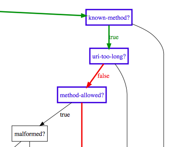
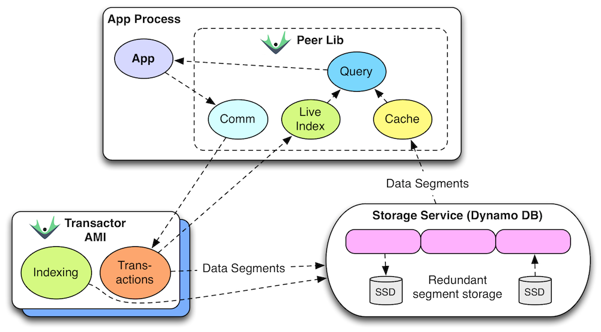

Clojure meetup 08-2014
Disclaimer
- Not a Clojure expert, by no means.
- Keen to learn. Always.
- Try new things ⤇ influences everything else.

What: Cauda
- Queue for song requests
- Requests are per user
- Enable veto'ing of songs
- https://github.com/fgeller/cauda
Example: User management
RESTful resource:
- GET /users
- POST /users
- JSON
- https://github.com/fgeller/clj-meetup-akl-2014-08
Tech

Start!
(ns meetup-users.core (:require [clojure.data.json :as json] [clojure.java.io :as io] [datomic.api :only [q db] :as peer] [liberator.core :refer [resource defresource]] [liberator.dev :refer [wrap-trace]] [compojure.core :refer [defroutes ANY]] [ring.adapter.jetty :refer [run-jetty]])) (def datomic-uri "datomic:mem://users") (def schema-txs [{:db/id #db/id[:db.part/db] :db/ident :user/id :db/valueType :db.type/long :db/cardinality :db.cardinality/one :db.install/_attribute :db.part/db}, {:db/id #db/id[:db.part/db] :db/ident :user/nick :db/valueType :db.type/string :db/cardinality :db.cardinality/one :db.install/_attribute :db.part/db}]) (defn setup-database [] (peer/create-database datomic-uri) @(peer/transact (peer/connect datomic-uri) schema-txs)) (defn delete-database [] (peer/delete-database datomic-uri)) (defn read-database [] (peer/db (peer/connect datomic-uri))) (setup-database) (defresource users-resource) (defroutes app-routes (ANY "/users" [] users-resource)) (def handlers (wrap-trace app-routes :header :ui)) (defn boot [port] (run-jetty #'handlers {:port port :join? false}))
Loading (meetup-users.core meetup-users.core-test)
FAIL "listing users" at (core_test.clj:15)
Expected: "{}"
Actual: "OK"
FAIL "adding and listing a user" at (core_test.clj:21)
Expected: 201
Actual: 405
FAIL "adding and listing a user" at (core_test.clj:25)
Expected: "{\"1\":{\"nick\":\"hans\"}}"
Actual: "OK"
FAILURE: 3 checks failed. (But 2 succeeded.)
[Completed at 09:05:04]
Install basic OK handler
(defresource users-resource :handle-ok (fn [context] {}))
Loading (meetup-users.core meetup-users.core-test)
FAIL "listing users" at (core_test.clj:14)
Expected: 200
Actual: 500
FAIL "listing users" at (core_test.clj:15)
Expected: "{}"
Actual: "Internal server error."
FAIL "adding and listing a user" at (core_test.clj:21)
Expected: 201
Actual: 405
FAIL "adding and listing a user" at (core_test.clj:24)
Expected: 200
Actual: 500
FAIL "adding and listing a user" at (core_test.clj:25)
Expected: "{\"1\":{\"nick\":\"hans\"}}"
Actual: "Internal server error."
FAILURE: 5 checks failed.
[Completed at 09:06:42]
What's going on?
(boot 2022)
curl -vv -XGET http://localhost:2022/users > GET /users HTTP/1.1 > User-Agent: curl/7.30.0 > Host: localhost:2022 > Accept: */* > < HTTP/1.1 406 Not Acceptable < Date: Wed, 27 Aug 2014 19:52:10 GMT < X-Liberator-Trace: :decision (:service-available? true) < X-Liberator-Trace: :decision (:known-method? :get) < X-Liberator-Trace: :decision (:uri-too-long? false) < X-Liberator-Trace: :decision (:method-allowed? :get) < X-Liberator-Trace: :decision (:malformed? false) < X-Liberator-Trace: :decision (:authorized? true) < X-Liberator-Trace: :decision (:allowed? true) < X-Liberator-Trace: :decision (:valid-content-header? true) < X-Liberator-Trace: :decision (:known-content-type? true) < X-Liberator-Trace: :decision (:valid-entity-length? true) < X-Liberator-Trace: :decision (:is-options? false) < X-Liberator-Trace: :decision (:accept-exists? true) < X-Liberator-Trace: :decision (:media-type-available? nil) < X-Liberator-Trace: :handler (:handle-not-acceptable "(default implementation)") < Link: <//x-liberator/requests/yjz7a>; rel=x-liberator-trace < X-Liberator-Trace-Id: yjz7a < Content-Type: text/plain;charset=ISO-8859-1 < Content-Length: 33 < Server: Jetty(7.6.8.v20121106) < No acceptable resource available.
Let's make it available
(defresource users-resource :available-media-types ["application/json"] :handle-ok (fn [context] {}))
curl -vv -XGET http://localhost:2022/users
> GET /users HTTP/1.1
> User-Agent: curl/7.30.0
> Host: localhost:2022
> Accept: */*
>
< HTTP/1.1 200 OK
< Date: Wed, 27 Aug 2014 19:52:44 GMT
< X-Liberator-Trace: :decision (:service-available? true)
< X-Liberator-Trace: :decision (:known-method? :get)
< X-Liberator-Trace: :decision (:uri-too-long? false)
< X-Liberator-Trace: :decision (:method-allowed? :get)
< X-Liberator-Trace: :decision (:malformed? false)
< X-Liberator-Trace: :decision (:authorized? true)
< X-Liberator-Trace: :decision (:allowed? true)
< X-Liberator-Trace: :decision (:valid-content-header? true)
< X-Liberator-Trace: :decision (:known-content-type? true)
< X-Liberator-Trace: :decision (:valid-entity-length? true)
< X-Liberator-Trace: :decision (:is-options? false)
< X-Liberator-Trace: :decision (:accept-exists? true)
< X-Liberator-Trace: :decision (:media-type-available? {:representation {:media-type "application/json"}})
< X-Liberator-Trace: :decision (:accept-language-exists? nil)
< X-Liberator-Trace: :decision (:accept-charset-exists? nil)
< X-Liberator-Trace: :decision (:accept-encoding-exists? nil)
< X-Liberator-Trace: :decision (:processable? true)
< X-Liberator-Trace: :decision (:exists? true)
< X-Liberator-Trace: :decision (:if-match-exists? nil)
< X-Liberator-Trace: :decision (:if-unmodified-since-exists? nil)
< X-Liberator-Trace: :decision (:if-none-match-exists? nil)
< X-Liberator-Trace: :decision (:if-modified-since-exists? nil)
< X-Liberator-Trace: :decision (:method-delete? false)
< X-Liberator-Trace: :decision (:method-patch? false)
< X-Liberator-Trace: :decision (:post-to-existing? false)
< X-Liberator-Trace: :decision (:put-to-existing? false)
< X-Liberator-Trace: :decision (:multiple-representations? false)
< X-Liberator-Trace: :handler (:handle-ok)
< Link: <//x-liberator/requests/3g13o>; rel=x-liberator-trace
< X-Liberator-Trace-Id: 3g13o
< Vary: Accept
< Content-Type: application/json;charset=UTF-8
< Content-Length: 2
< Server: Jetty(7.6.8.v20121106)
<
{}
Loading (meetup-users.core meetup-users.core-test)
FAIL "adding and listing a user" at (core_test.clj:21)
Expected: 201
Actual: 405
FAIL "adding and listing a user" at (core_test.clj:25)
Expected: "{\"1\":{\"nick\":\"hans\"}}"
Actual: "{}"
FAILURE: 2 checks failed. (But 3 succeeded.)
[Completed at 07:54:07]
POST is next.
(defresource users-resource :available-media-types ["application/json"] :post! (fn [context] (println context)) :handle-ok (fn [context] {}))
Loading (meetup-users.core meetup-users.core-test)
FAIL "adding and listing a user" at (core_test.clj:21)
Expected: 201
Actual: 405
FAIL "adding and listing a user" at (core_test.clj:25)
Expected: "{\"1\":{\"nick\":\"hans\"}}"
Actual: "{}"
FAILURE: 2 checks failed. (But 3 succeeded.)
[Completed at 07:57:33]
What, again?
curl -vv -XPOST -H'Content-type: application/json' -d'{"nick": "hans"}' http://localhost:2022/users
> POST /users HTTP/1.1
> User-Agent: curl/7.30.0
> Host: localhost:2022
> Accept: */*
> Content-type: application/json
> Content-Length: 16
>
< HTTP/1.1 405 Method Not Allowed
< Date: Wed, 27 Aug 2014 19:59:06 GMT
< X-Liberator-Trace: :decision (:service-available? true)
< X-Liberator-Trace: :decision (:known-method? :post)
< X-Liberator-Trace: :decision (:uri-too-long? false)
< X-Liberator-Trace: :decision (:method-allowed? nil)
< X-Liberator-Trace: :handler (:handle-method-not-allowed "(default implementation)")
< Link: <//x-liberator/requests/trx8c>; rel=x-liberator-trace
< X-Liberator-Trace-Id: trx8c
< Allow: GET, HEAD
< Content-Type: text/plain;charset=ISO-8859-1
< Content-Length: 19
< Server: Jetty(7.6.8.v20121106)
<
Method not allowed.
Ok, let's allow it.
(defresource users-resource :available-media-types ["application/json"] :allowed-methods [:get :post] :post! (fn [context] (println context)) :handle-ok (fn [context] {}))
Loading (meetup-users.core meetup-users.core-test)
{:request {:remote-addr localhost, :params {}, :route-params {}, :headers {content-length 16, content-type application/json, host localhost}, :server-port 80, :content-length 16, :content-type application/json, :uri /users, :server-name localhost, :query-string nil, :body #<ByteArrayInputStream java.io.ByteArrayInputStream@44cd09b3>, :scheme :http, :request-method :post}, :resource {:existed? #<core$constantly$fn__4085 clojure.core$constantly$fn__4085@5742fe0d>, :conflict? #<core$constantly$fn__4085 clojure.core$constantly$fn__4085@6f35343c>, :handle-see-other #<core$handle_moved liberator.core$handle_moved@37b48b2c>, :handle-moved-temporarily #<core$handle_moved liberator.core$handle_moved@37b48b2c>, :allowed? #<core$constantly$fn__4085 clojure.core$constantly$fn__4085@2e1d1246>, :malformed? #<core$constantly$fn__4085 clojure.core$constantly$fn__4085@769ac950>, :available-languages #<core$constantly$fn__4085 clojure.core$constantly$fn__4085@2c16e005>, :moved-temporarily? #<core$constantly$fn__4085 clojure.core$constantly$fn__4085@11cd7ee0>, :processable? #<core$constantly$fn__4085 clojure.core$constantly$fn__4085@4a44ad41>, :can-put-to-missing? #<core$constantly$fn__4085 clojure.core$constantly$fn__4085@62caac7e>, :post! #<core$fn__13723 meetup_users.core$fn__13723@a339c84>, :valid-entity-length? #<core$constantly$fn__4085 clojure.core$constantly$fn__4085@4268a357>, :patch-content-types #<core$constantly$fn__4085 clojure.core$constantly$fn__4085@63bbc6d0>, :handle-moved-permanently #<core$handle_moved liberator.core$handle_moved@37b48b2c>, :known-methods #<core$constantly$fn__4085 clojure.core$constantly$fn__4085@3cf9b4d7>, :known-method? #<core$test_request_method$fn__12535 liberator.core$test_request_method$fn__12535@1dcb3890>, :can-post-to-missing? #<core$constantly$fn__4085 clojure.core$constantly$fn__4085@8ee8538>, :service-available? #<core$constantly$fn__4085 clojure.core$constantly$fn__4085@636c241c>, :post-redirect? #<core$constantly$fn__4085 clojure.core$constantly$fn__4085@50b6dd42>, :handle-ok #<core$fn__13725 meetup_users.core$fn__13725@a1131af>, :authorized? #<core$constantly$fn__4085 clojure.core$constantly$fn__4085@6ed4dd52>, :available-media-types #<core$constantly$fn__4085 clojure.core$constantly$fn__4085@590e6b56>, :allowed-methods #<core$constantly$fn__4085 clojure.core$constantly$fn__4085@41a908c7>, :available-charsets #<core$constantly$fn__4085 clojure.core$constantly$fn__4085@407f627e>, :multiple-representations? #<core$constantly$fn__4085 clojure.core$constantly$fn__4085@6b1b5f46>, :delete-enacted? #<core$constantly$fn__4085 clojure.core$constantly$fn__4085@520c2399>, :as-response #<representation$eval11973$fn__11974$G__11964__11981 liberator.representation$eval11973$fn__11974$G__11964__11981@5a2f038f>, :exists? #<core$constantly$fn__4085 clojure.core$constantly$fn__4085@4492cf8a>, :delete! #<core$constantly$fn__4085 clojure.core$constantly$fn__4085@2779032>, :method-allowed? #<core$test_request_method$fn__12535 liberator.core$test_request_method$fn__12535@779bc3e1>, :put! #<core$constantly$fn__4085 clojure.core$constantly$fn__4085@13592620>, :moved-permanently? #<core$constantly$fn__4085 clojure.core$constantly$fn__4085@41d608cc>, :put-to-different-url? #<core$constantly$fn__4085 clojure.core$constantly$fn__4085@4adbaad8>, :respond-with-entity? #<core$constantly$fn__4085 clojure.core$constantly$fn__4085@1bad714d>, :valid-content-header? #<core$constantly$fn__4085 clojure.core$constantly$fn__4085@17e9846d>, :uri-too-long? #<core$constantly$fn__4085 clojure.core$constantly$fn__4085@63f51c5e>, :new? #<core$constantly$fn__4085 clojure.core$constantly$fn__4085@71199296>, :patch! #<core$constantly$fn__4085 clojure.core$constantly$fn__4085@45e6efdc>, :available-encodings #<core$constantly$fn__4085 clojure.core$constantly$fn__4085@3c8d785e>, :known-content-type? #<core$constantly$fn__4085 clojure.core$constantly$fn__4085@6bd98260>}, :representation {:media-type application/json}}
FAIL "adding and listing a user" at (core_test.clj:25)
Expected: "{\"1\":{\"nick\":\"hans\"}}"
Actual: "{}"
FAILURE: 1 check failed. (But 4 succeeded.)
[Completed at 07:59:41]
Slurp it in!
(defresource users-resource :available-media-types ["application/json"] :allowed-methods [:get :post] :post! (fn [context] (let [body (slurp (get-in context [:request :body]))] (println body))) :handle-ok (fn [context] {}))
Loading (meetup-users.core meetup-users.core-test)
{"nick": "hans"}
FAIL "adding and listing a user" at (core_test.clj:25)
Expected: "{\"1\":{\"nick\":\"hans\"}}"
Actual: "{}"
FAILURE: 1 check failed. (But 4 succeeded.)
[Completed at 08:01:11]
Deserialize the JSON
(defresource users-resource :available-media-types ["application/json"] :allowed-methods [:get :post] :post! (fn [context] (let [body (json/read-str (slurp (get-in context [:request :body])))] (println body))) :handle-ok (fn [context] {}))
Loading (meetup-users.core meetup-users.core-test)
{nick hans}
FAIL "adding and listing a user" at (core_test.clj:25)
Expected: "{\"1\":{\"nick\":\"hans\"}}"
Actual: "{}"
FAILURE: 1 check failed. (But 4 succeeded.)
[Completed at 08:02:29]
Let's add the user to the database
(defn add-user [database data] (println database)) (defresource users-resource :available-media-types ["application/json"] :allowed-methods [:get :post] :post! (fn [context] (let [body (json/read-str (slurp (get-in context [:request :body])))] (add-user (read-database) body))) :handle-ok (fn [context] {}))
Loading (meetup-users.core meetup-users.core-test)
datomic.db.Db@dc5e4c35
FAIL "adding and listing a user" at (core_test.clj:25)
Expected: "{\"1\":{\"nick\":\"hans\"}}"
Actual: "{}"
FAILURE: 1 check failed. (But 4 succeeded.)
[Completed at 08:03:30]
Generate a new ID
(defn find-all-users [database] (peer/q '[:find ?u :where [?u :user/id]] database)) (defn add-user [database data] (let [new-id (+ 1 (count (find-all-users database)))] (println "new-id" new-id)))
Loading (meetup-users.core meetup-users.core-test)
new-id 1
FAIL "adding and listing a user" at (core_test.clj:25)
Expected: "{\"1\":{\"nick\":\"hans\"}}"
Actual: "{}"
FAILURE: 1 check failed. (But 4 succeeded.)
[Completed at 08:06:06]
Create a transaction to add the user
(defn add-user [database data] (let [new-id (+ 1 (count (find-all-users database))) user-tx {:db/id (peer/tempid :db.part/user) :user/id new-id :user/nick (get data "nick")}] (println user-tx)))
Loading (meetup-users.core meetup-users.core-test)
{:db/id #db/id[:db.part/user -1000043], :user/id 1, :user/nick hans}
FAIL "adding and listing a user" at (core_test.clj:25)
Expected: "{\"1\":{\"nick\":\"hans\"}}"
Actual: "{}"
FAILURE: 1 check failed. (But 4 succeeded.)
[Completed at 08:08:16]
Transact!
(defn add-user [database data] (let [new-id (+ 1 (count (find-all-users database))) user-tx {:db/id (peer/tempid :db.part/user) :user/id new-id :user/nick (get data "nick")}] (println (peer/transact (peer/connect datomic-uri) [user-tx]))))
Loading (meetup-users.core meetup-users.core-test)
#<promise$settable_future$reify__7@ddf072f: {:db-before datomic.db.Db@2dc4557e, :db-after datomic.db.Db@1a8fa010, :tx-data #<ArrayList [datomic.db.Datum@f50c66ce, datomic.db.Datum@be9582b7, datomic.db.Datum@68a2cb03]>, :tempids {-9223350046623220340 17592186045418}}>
FAIL "adding and listing a user" at (core_test.clj:25)
Expected: "{\"1\":{\"nick\":\"hans\"}}"
Actual: "{}"
FAILURE: 1 check failed. (But 4 succeeded.)
[Completed at 08:10:08]
Let's wait…
(defn add-user [database data] (let [new-id (+ 1 (count (find-all-users database))) user-tx {:db/id (peer/tempid :db.part/user) :user/id new-id :user/nick (get data "nick")}] (println @(peer/transact (peer/connect datomic-uri) [user-tx]))))
{:db-before datomic.db.Db@d82a795a, :db-after datomic.db.Db@d4f34870, :tx-data #<ArrayList [datomic.db.Datum@f50decd6, datomic.db.Datum@be9582b7, datomic.db.Datum@68a2cb03]>, :tempids {-9223350046623220343 17592186045418}}
FAIL "adding and listing a user" at (core_test.clj:25)
Expected: "{\"1\":{\"nick\":\"hans\"}}"
Actual: "{}"
FAILURE: 1 check failed. (But 4 succeeded.)
Actually look for users…
(defresource users-resource :available-media-types ["application/json"] :allowed-methods [:get :post] :post! (fn [context] (let [body (json/read-str (slurp (get-in context [:request :body])))] (add-user (read-database) body))) :handle-ok (fn [context] (find-all-users (read-database))))
Loading (meetup-users.core meetup-users.core-test)
FAIL "listing users" at (core_test.clj:14)
Expected: 200
Actual: 500
FAIL "listing users" at (core_test.clj:15)
Expected: "{}"
Actual: "Internal server error."
{:db-before datomic.db.Db@74ea23c8, :db-after datomic.db.Db@b9bf4286, :tx-data #<ArrayList [datomic.db.Datum@f502e001, datomic.db.Datum@be9582b7, datomic.db.Datum@68a2cb03]>, :tempids {-9223350046623220346 17592186045418}}
FAIL "adding and listing a user" at (core_test.clj:24)
Expected: 200
Actual: 500
FAIL "adding and listing a user" at (core_test.clj:25)
Expected: "{\"1\":{\"nick\":\"hans\"}}"
Actual: "Internal server error."
FAILURE: 4 checks failed. (But 1 succeeded.)
[Completed at 08:11:45]
What's going on?
curl -vv -XGET http://localhost:2022/users
> GET /users HTTP/1.1
> User-Agent: curl/7.30.0
> Host: localhost:2022
> Accept: */*
>
< HTTP/1.1 500 Server Error
< Date: Wed, 27 Aug 2014 20:12:44 GMT
< X-Liberator-Trace: :decision (:service-available? true)
< X-Liberator-Trace: :decision (:known-method? :get)
< X-Liberator-Trace: :decision (:uri-too-long? false)
< X-Liberator-Trace: :decision (:method-allowed? :get)
< X-Liberator-Trace: :decision (:malformed? false)
< X-Liberator-Trace: :decision (:authorized? true)
< X-Liberator-Trace: :decision (:allowed? true)
< X-Liberator-Trace: :decision (:valid-content-header? true)
< X-Liberator-Trace: :decision (:known-content-type? true)
< X-Liberator-Trace: :decision (:valid-entity-length? true)
< X-Liberator-Trace: :decision (:is-options? false)
< X-Liberator-Trace: :decision (:accept-exists? true)
< X-Liberator-Trace: :decision (:media-type-available? {:representation {:media-type "application/json"}})
< X-Liberator-Trace: :decision (:accept-language-exists? nil)
< X-Liberator-Trace: :decision (:accept-charset-exists? nil)
< X-Liberator-Trace: :decision (:accept-encoding-exists? nil)
< X-Liberator-Trace: :decision (:processable? true)
< X-Liberator-Trace: :decision (:exists? true)
< X-Liberator-Trace: :decision (:if-match-exists? nil)
< X-Liberator-Trace: :decision (:if-unmodified-since-exists? nil)
< X-Liberator-Trace: :decision (:if-none-match-exists? nil)
< X-Liberator-Trace: :decision (:if-modified-since-exists? nil)
< X-Liberator-Trace: :decision (:method-delete? false)
< X-Liberator-Trace: :decision (:method-patch? false)
< X-Liberator-Trace: :decision (:post-to-existing? false)
< X-Liberator-Trace: :decision (:put-to-existing? false)
< X-Liberator-Trace: :decision (:multiple-representations? false)
< X-Liberator-Trace: :handler (:handle-ok)
< X-Liberator-Trace: :handler (:handle-exception "(default implementation)")
< Link: <//x-liberator/requests/kq42j>; rel=x-liberator-trace
< X-Liberator-Trace-Id: kq42j
< Content-Type: text/plain;charset=ISO-8859-1
< Content-Length: 22
< Server: Jetty(7.6.8.v20121106)
<
Internal server error.
Let's install that handler
(defresource users-resource :available-media-types ["application/json"] :allowed-methods [:get :post] :handle-exception (fn [context] (println "EX:" (:exception context))) :post! (fn [context] (let [body (json/read-str (slurp (get-in context [:request :body])))] (add-user (read-database) body))) :handle-ok (fn [context] (find-all-users (read-database))))
Loading (meetup-users.core meetup-users.core-test)
EX: #<IllegalArgumentException java.lang.IllegalArgumentException: No implementation of method: :as-response of protocol: #'liberator.representation/Representation found for class: java.util.HashSet>
FAIL "listing users" at (core_test.clj:14)
Expected: 200
Actual: 500
FAIL "listing users" at (core_test.clj:15)
Expected: "{}"
Actual: ""
{:db-before datomic.db.Db@6af93a79, :db-after datomic.db.Db@a7b28fb2, :tx-data #<ArrayList [datomic.db.Datum@f500ab8a, datomic.db.Datum@be9582b7, datomic.db.Datum@68a2cb03]>, :tempids {-9223350046623220349 17592186045418}}
EX: #<IllegalArgumentException java.lang.IllegalArgumentException: No implementation of method: :as-response of protocol: #'liberator.representation/Representation found for class: java.util.HashSet>
FAIL "adding and listing a user" at (core_test.clj:24)
Expected: 200
Actual: 500
FAIL "adding and listing a user" at (core_test.clj:25)
Expected: "{\"1\":{\"nick\":\"hans\"}}"
Actual: ""
FAILURE: 4 checks failed. (But 1 succeeded.)
[Completed at 08:13:42]
Let's avoid that for now.
(defresource users-resource :available-media-types ["application/json"] :allowed-methods [:get :post] :handle-exception (fn [context] (println "EX:" (:exception context))) :post! (fn [context] (let [body (json/read-str (slurp (get-in context [:request :body])))] (add-user (read-database) body))) :handle-ok (fn [context] (let [entity-ids (find-all-users (read-database))] (println entity-ids) {})))
Loading (meetup-users.core meetup-users.core-test)
#<HashSet []>
#<HashSet [[17592186045418]]>
FAIL "adding and listing a user" at (core_test.clj:25)
Expected: "{\"1\":{\"nick\":\"hans\"}}"
Actual: "{}"
FAILURE: 1 check failed. (But 4 succeeded.)
[Completed at 08:16:21]
Find the entities for the given IDs
(defresource users-resource :available-media-types ["application/json"] :allowed-methods [:get :post] :handle-exception (fn [context] (println "EX:" (:exception context))) :post! (fn [context] (let [body (json/read-str (slurp (get-in context [:request :body])))] (add-user (read-database) body))) :handle-ok (fn [context] (let [database (read-database) entity-ids (find-all-users database) entities (map (fn [[entity-id]] (peer/entity database entity-id)) entity-ids)] (println entities) {})))
Loading (meetup-users.core meetup-users.core-test)
()
({:db/id 17592186045418})
FAIL "adding and listing a user" at (core_test.clj:25)
Expected: "{\"1\":{\"nick\":\"hans\"}}"
Actual: "{}"
FAILURE: 1 check failed. (But 4 succeeded.)
[Completed at 08:30:32]
Convert them to maps!
(defresource users-resource :available-media-types ["application/json"] :allowed-methods [:get :post] :handle-exception (fn [context] (println "EX:" (:exception context))) :post! (fn [context] (let [body (json/read-str (slurp (get-in context [:request :body])))] (add-user (read-database) body))) :handle-ok (fn [context] (let [database (read-database) entity-ids (find-all-users database) entities (map (fn [[entity-id]] (peer/entity database entity-id)) entity-ids) users (map (fn [entity] {(:user/id entity) {:nick (:user/nick entity)}}) entities)] users)))
Loading (meetup-users.core meetup-users.core-test)
FAIL "listing users" at (core_test.clj:15)
Expected: "{}"
Actual: "[]"
FAIL "adding and listing a user" at (core_test.clj:25)
Expected: "{\"1\":{\"nick\":\"hans\"}}"
Actual: "[{\"1\":{\"nick\":\"hans\"}}]"
FAILURE: 2 checks failed. (But 3 succeeded.)
[Completed at 08:53:52]
Merge!
(defresource users-resource :available-media-types ["application/json"] :allowed-methods [:get :post] :handle-exception (fn [context] (println "EX:" (:exception context))) :post! (fn [context] (let [body (json/read-str (slurp (get-in context [:request :body])))] (add-user (read-database) body))) :handle-ok (fn [context] (let [database (read-database) entity-ids (find-all-users database) entities (map (fn [[entity-id]] (peer/entity database entity-id)) entity-ids) users (map (fn [entity] {(:user/id entity) {:nick (:user/nick entity)}}) entities)] (into {} users))))
Loading (meetup-users.core meetup-users.core-test) All checks (5) succeeded. [Completed at 08:55:40]
Liberator
- http://clojure-liberator.github.io/liberator/
- Context of a request
- Decision and action functions
- Debugging: graph or header response
http://clojure-liberator.github.io/liberator/tutorial/decision-graph.html

Datomic

- Collection of entities (collection of attributes)
- In-memory, blobs stored in datastores
- Immutable - one database view per read
- Timestamps of transactions define version - Single transactor defining timestamps
- Queries are data
- Multiple indexes: EAVT, AEVT, AVET, VAET
Index example
(defn find-last-pop [database] (let [last-pop-time-attribute (last (peer/datoms database :avet :value/pop-time)) last-pop (:value/content (peer/entity database (:e last-pop-time-attribute)))] last-pop))
{kind=link}
{kind=link}
{kind=link}